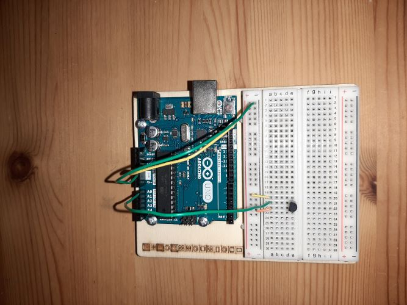

On this page you will find all the projects that I participated in with the DigiFab course. Hope you like it and Please contact
me if you have any questions or comments
Arduino
In this project I will make a simple heat alarm using Arduino. This alarm is a temperature sensor with a screen that shows the temperature,
In addition to a piezo (a device that makes noise and vibration) it makes noise when the temperature rises more than 24, for example.
I will explain in detail how to connect the tools with the code I wrote.
COMPONENTS AND SUPPLIES
Arduino
Temperature sensor
Potentiometer
LCD (Liquid Crystal Display)
Piezo
Jumper wires
Sensor:
First we connect the temperature sensor as in the picture below. We calculate the temperature by reading the values from the sensor and converting
them to volts, then converting volts to temperature using the following law (volt = (5.0 / 1024.0) * value), (temp = (volt - 0.5) * 100). We can print
the temperature on the computer. Here is the code and some pictures for clarification.
#define sensor A0
int value = 0;
float volt = 0;
int temp = 0;
void setup() {
Serial.begin(9600);
}
void loop() {
value = analogRead(sensor);
volt = (5.0 / 1024.0) * value;
temp = (volt - 0.5) * 100;
Serial.print("temp = ");
Serial.print(temp);
Serial.println(" C");
}

Screen
second, we connect the screen to the Arduino, as in the picture below. And we write the code so that the temperature appears on the screen in the
form (Temp = - - C). When the temperature becomes more than 24, a warning word will appear on the screen.
Third, we connect the piezo as in the picture below. When the temperature is between 22 and 24, the device emits an intermittent tone, and when it
is more than 24, the device emits a long tone that does not stop until the temperature drops below 24 g. To do this, we write the following code